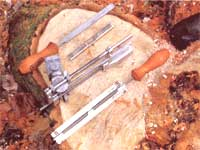

STEVE MAXWELL
Periodically filing depth gauges is one of the little-known tricks to maintaining saw-chain performance (left). Consistency is the key to a sharp saw: File each cutter with the same number of strokes (right).